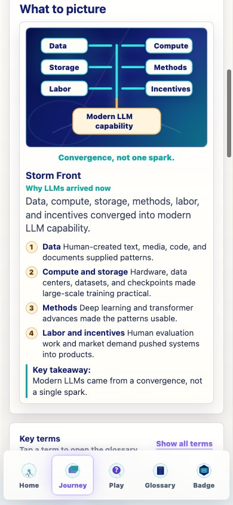
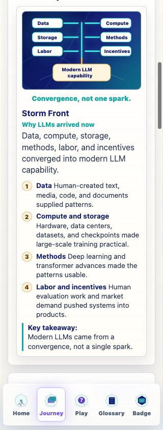
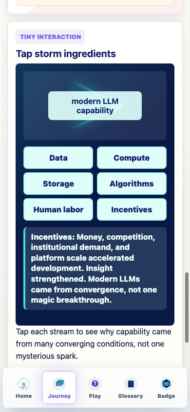

Perfect Storm Visual Layout Repair
Repaired the coded Storm Front visual so the convergence idea is clear on mobile without label collisions.
What Changed
- Replaced the cramped radial SVG with a stacked two-column convergence layout.
- Kept short SVG labels: Data, Compute, Storage, Methods, Labor, Incentives, and Modern LLM capability.
- Moved
Convergence, not one spark.into HTML below the diagram. - Preserved the existing non-competitive tap-to-light ingredient interaction.
Verification
npm run typecheck: passed.npm run build: passed with the existing large-chunk warning.npm run build:pages: passed with the existing large-chunk warning.npm run audit:answers: passed; Perfect Storm checkpoint remains randomized.- 390px and 320px QA: no SVG text overlaps, no horizontal overflow, and the old in-SVG convergence label is gone.
- Interaction QA: all six ingredient buttons can be active and remain above the bottom nav.
Screenshots



Known Issue
The existing Vite large-chunk warning remains.